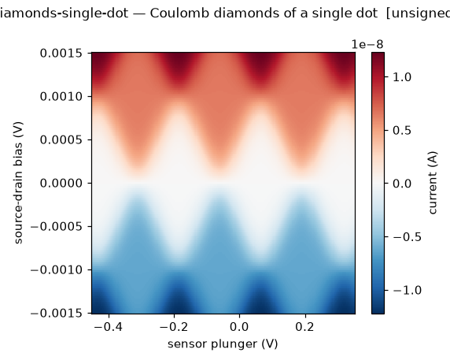
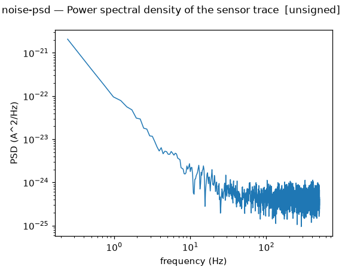
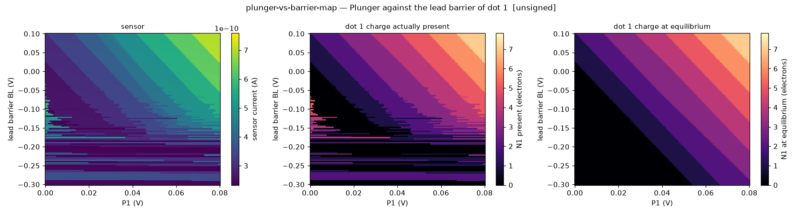
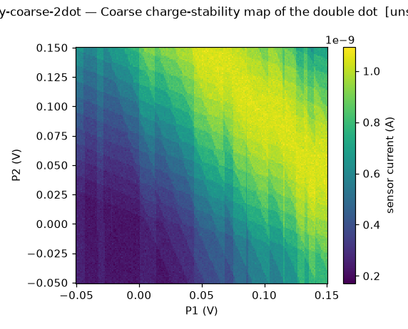
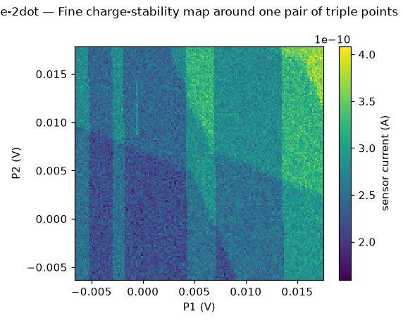
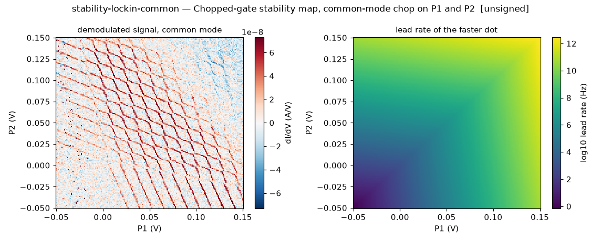
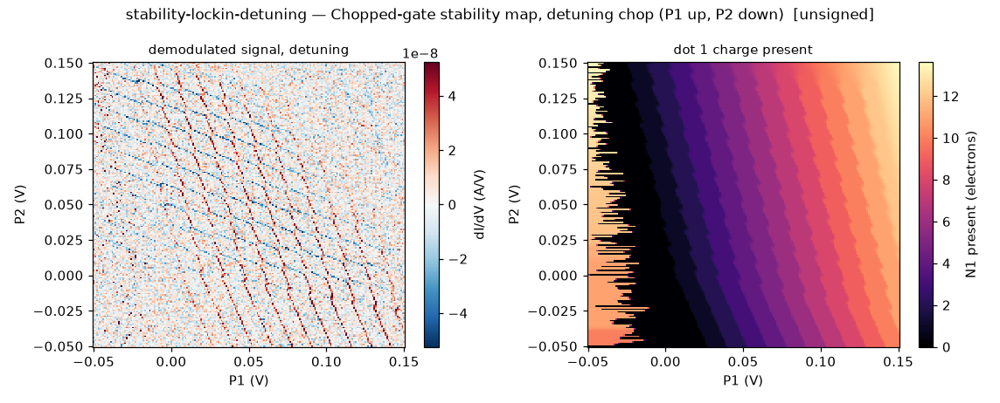
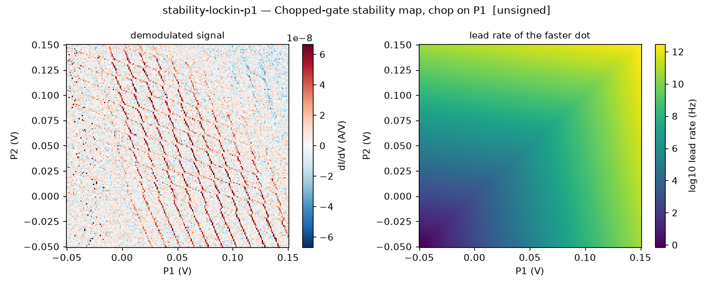
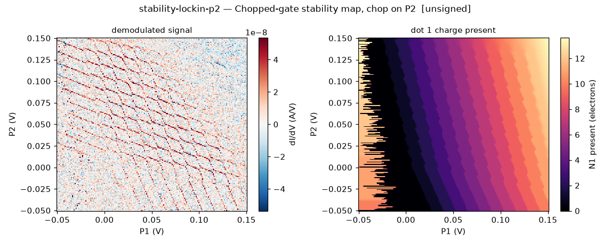

phantom gallery
commit 91e6510 · Linux-6.17.0-1022-azure-x86_64-with-glibc2.39 · python 3.12.3 · numpy 2.5.4. Rendered by CI; nothing here is stored in git (ADR 0008).
Budget ledger (ADR 0009)
coulomb-oscillations-single-dot — Coulomb oscillations of a single dot
Current through a single dot (the SET sensor) against its plunger at small bias, plungers of the double dot at 0 V. Periodic thermally broadened peaks spaced by the addition energy over the lever arm. Noise-free.
layers: readout, charge · step 1 · sign-off: unsigned · sha256 6382b8fe1b32004b…

Must show:
diamonds-single-dot — Coulomb diamonds of a single dot
Current through a single dot (the SET sensor) against its plunger and the source-drain bias. Diamond edges have slope plus or minus twice the lever arm; the apex sits at the charging energy. Noise-free.
layers: readout, charge · step 1 · sign-off: unsigned · sha256 8e80ebf56a7e98a2…

Must show:
noise-psd — Power spectral density of the sensor trace
Welch estimate (4096-sample Hann segments) of the sensor current noise at the flank point, from the same 30 s trace and seed as noise-time-trace. The 1/f slope from the fluctuator ensemble, Lorentzian shoulders from the dominant trap, and the white floor.
layers: readout · step 1 · sign-off: unsigned · sha256 909300d73953d5e5…

Must show:
noise-time-trace — Sensor time trace at a fixed point
Sensor current at a point on the steep flank of a sensor peak, sampled every millisecond for 30 s with the default noise draw. White noise, telegraph switching of the trap near the sensor, and slow 1/f drift of the working point.
layers: readout · step 1 · sign-off: unsigned · sha256 3aef72ebf8fe0d5c…

Must show:
pinch-off-barrier — Barrier pinch-off
Current through a channel as one barrier gate closes it. Exponential tail below pinch-off with the barrier's own voltage scale, saturation above. Phenomenological in Step 1 (calibration none).
layers: readout, charge · step 1 · sign-off: unsigned · sha256 4f4875c24b6b37ef…

Must show:
plunger-vs-barrier-map — Plunger against the lead barrier of dot 1
Sensor current against P1 (fast axis) and the barrier BL between dot 1 and its reservoir (slow axis). Dot 1 is the only dot connected to a bath; dot 2 exchanges electrons only through dot 1. P2 holds dot 2 near one electron. The dot-1 transition lines tilt with the lead barrier's lever arm, and as the barrier closes the tunnel rate falls below the inverse dwell time, so the dot can no longer load or unload during the row and the lines fade and latch (the charge is carried across the flyback). Noise-free; the loading model is a Step 1 placeholder for Step 4.
layers: charge, readout · step 1 · sign-off: unsigned · sha256 8485c3fdee964794…

Must show:
sensor-coulomb-peak — One sensor Coulomb peak and its flank
Sensor current against the sensor plunger around one peak, and the slope of that curve. The steep flank is where the sensor is operated; its slope is the sensitivity. Noise-free.
layers: readout · step 1 · sign-off: unsigned · sha256 9227b9e53df944ee…

Must show:
stability-coarse-2dot — Coarse charge-stability map of the double dot
Sensor current against both plungers over a wide range, raster-scanned at 1 ms per point with the default noise draw. The honeycomb of charge transitions, the lines of both dots with different slopes, the empty corner where transitions stop, and 1/f drift and sensor switching visible as streaks.
layers: charge, readout · step 1 · sign-off: unsigned · sha256 27494476b2fbc355…

Must show:
stability-fine-2dot — Fine charge-stability map around one pair of triple points
Sensor current against both plungers in a small window centred on the first honeycomb vertex, with the default noise draw. The interdot transition between the two triple points, its length set by the mutual capacitance, and thermal broadening of the lines.
layers: charge, readout · step 1 · sign-off: unsigned · sha256 99d19fc5088b9bd7…

Must show:
stability-lockin-common — Chopped-gate stability map, common-mode chop on P1 and P2
As stability-lockin-p1 with the 1 mV square wave applied to P1 and P2 together (common mode). Both dots' lines respond; the interdot transition, along which the total charge is constant, responds weakly because common-mode pulsing moves along it. Same lead-rate landscape, default noise draw.
layers: charge, readout · step 1 · sign-off: unsigned · sha256 e04398b36019e5ed…

Must show:
stability-lockin-detuning — Chopped-gate stability map, detuning chop (P1 up, P2 down)
As stability-lockin-p1 with the 1 mV square wave applied to P1 and P2 in opposition (detuning). The interdot transition responds most strongly, since detuning pulsing crosses it; the lead transitions of the two dots respond with opposite sign. Same lead-rate landscape, default noise draw.
layers: charge, readout · step 1 · sign-off: unsigned · sha256 f8cac1b707b8dade…

Must show:
stability-lockin-p1 — Chopped-gate stability map, chop on P1
The coarse stability region read through the sensor_lockin channel with a 1 mV square wave at 1 kHz on P1, four cycles per point, demodulated, with tunnel-rate dynamics. The lead rates rise exponentially with the plungers, so in the low-voltage corner the rate is below the chop frequency and the charge cannot follow, which latches or erases the lines; in the high-voltage corner the rate is far above it and the lines are lifetime-broadened and fainter. Dot-1 lines respond strongly to a P1 chop, dot-2 lines only through cross-capacitance. Default noise draw.
layers: charge, readout · step 1 · sign-off: unsigned · sha256 01b6cb7eb6dd29da…

Must show:
stability-lockin-p2 — Chopped-gate stability map, chop on P2
As stability-lockin-p1 with the 1 mV square wave on P2. Dot-2 lines respond strongly, dot-1 lines only through cross-capacitance; the same lead-rate landscape gives latching in the low-voltage corner and broadening in the high-voltage corner. Default noise draw.
layers: charge, readout · step 1 · sign-off: unsigned · sha256 0e25d40d032a3ea3…

Must show:
turn-on-single-gate — Channel turn-on under one gate
Current through a channel as one accumulation gate is raised, all others fixed. A phenomenological shape in Step 1 (calibration none); Step 2 derives it from the layout potential.
layers: readout · step 1 · sign-off: unsigned · sha256 b9e5a1e942929bf0…

Must show: